Fisheries model theory: biological model
Jaideep Joshi, Anna Shchiptsova
28 March 2022
theory_bio.RmdIntroduction
A fish goes through four life-history processes every year:
Growth - This is the increment in the body size by growth. Growth rates are different for mature and immature individuals, since mature individuals allocate resources for reproduction.
Decision to mature - Every year, fish will decide whether or not to mature (until maturation). Once matured, reproduction begins.
Reproduction - production of eggs
Mortality - This is natural and fishing-induced death
A fish is characterized by its age and length , where is the maximum considered age. Below, we present our model formulations for these four life-history processes. For comparison, we also present corresponding formulations from a simpler age-structured model as in Dankel et al. XXXX.
Growth
Let us define a generalized length increment () from age to age as
where is the allometric exponent of relationship between energy-acquisition rate and body weight, and is the allometric exponent of length-weight relationship.
In our model, growth depends on the fish’s length, temperature, the total stock biomass of the population, such that the geneneralized length increment is given by
where is the mean weight-specific energy-acquisition rate, is the allometric coefficient of the length-weight relationship, and and are the anomalies of total stock biomass (TSB) and temperature, respectively. Setting removes the temperature and density effects on growth.
In the absence of reproductive investment, i.e., for juvenile fish, the new length is therefore
Mature fish (adults) invest energy into reproduction, such that the new length is downregulated. Thus, the length increment is
where is the gonadosomatic index (GSI), i.e., the ratio of reproductive investment and somatic weight for mature individuals.
Symbols are summarized in the table below:
| Parameter | Description |
|---|---|
| allometric exponent of relationship between energy-acquisition rate and body weight | |
| allometric exponent of length-weight relationship | |
| mean weight-specific energy-acquisition rate | |
| allometric coefficient of length-weight relationship | |
| gonadosomatic index (ratio of reproductive investment and somatic weight for mature individuals) |
We use the maximum of current and new length for adults to ensure that body size does not shrink.
The effective GSI of the fish during this growth year can be calculated from the difference between the potential length increment and the realized length increment,
Simulating growth
params_file = here::here("params/cod_params.ini")
fleet_params_file = here::here("params/fleet_1_params.ini")Let us now simulate the growth of a fish starting at age 1 upto age 30 under constant temperature and TSB. The fish will perform maturation, growth, and age increment, every year in that order. We will record the fish length at each timestep so that we can plot the growth trajectory.
fish = new(Fish, params_file)
fish$init(0, 5.61)
years = 1:31
length = numeric(31)
for (i in years){
length[i] = fish$length
fish$updateMaturity(5.61)
fish$grow(0, 5.61)
fish$set_age(fish$age+1)
}
plot(length~years, xlab="Age", ylab="Length", type="l", lwd=2)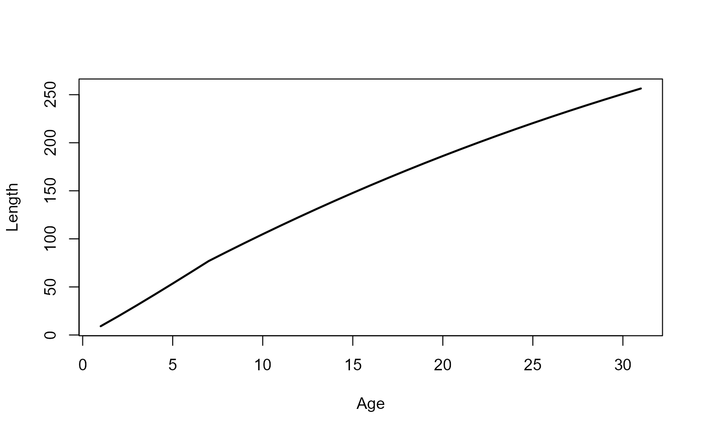
Now, since the growth trajectory of a fish depends on the age at which it matures, and since maturation is a random process, let us simulate lots of fish and look at the possible growth trajectories.
growth_trajectories = function(beta1=NULL, beta2=NULL, N=50){
names = c("t_birth", "age", "isMature", "isAlive", "length", "weight", "mort", "temp", "fec", "ssb")
dat_full = data.frame(data=matrix(nrow=0, ncol=length(names)))
colnames(dat_full) = names
plot(x=1, y=NA, xlim=c(0,31), ylim=c(0,250), xlab="Age", ylab = "Length")
for (f in 1:N){
fish = new(Fish, params_file)
if (!is.null(beta1)) fish$par$beta1 = beta1
if (!is.null(beta2)) fish$par$beta2 = beta2
dat = data.frame(data=matrix(nrow=0, ncol=length(names)))
colnames(dat) = names
temp0 = rnorm(1, mean=5.61, sd=3)
tsb0 = runif(1, min = 0, max = 1.93e3*3)
fish$init(tsb0, temp0)
dat[1,] = c(fish$get_state(), fish$naturalMortalityRate(5.61), 5.61, 0, 0.8*tsb0) # Assuming SSB is 80% of TSB, since we are not simulating a population
for (i in 2:30){
temp = rnorm(1, mean=5.61, sd=3)
tsb = runif(1, min = 0, max = 1.93e3*3)
fish$updateMaturity(temp)
fish$grow(tsb, temp)
fish$set_age(fish$age+1)
dat[i,] = c(fish$get_state(), fish$naturalMortalityRate(temp), temp, fish$produceRecruits(0.8*tsb*1e6, temp), 0.8*tsb) # Assuming SSB is 80% of TSB, since we are not simulating a population
}
points(dat$length~dat$age, type="l", col=scales::alpha(rainbow(N)[f], 0.3))
dat_full = rbind(dat_full, dat)
}
dat_full
}
dat_full = growth_trajectories(N=50)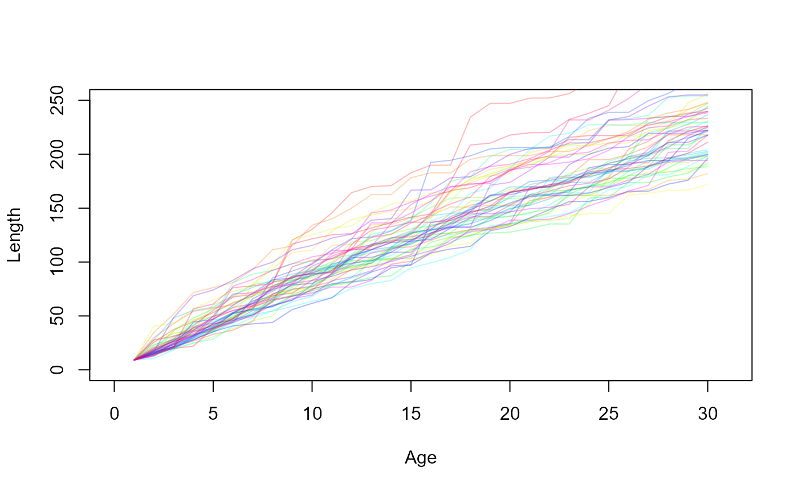
Decision to mature
Decision to mature is defined by a probabilistic maturation reaction norm (PMRN), with a probability of maturing in the next year depending on age , length , and temperature , given by the following equation,
with the steepness of the curve calculated as
Let us visualize the PMRN.
lvec = seq(0,200, length.out = 100)
avec = seq(1,31, length.out = 31)
fish = new(Fish, params_file)
fish$init(0, 5.61)
calc_maturation_prob1 = function(a,l, temp=5.61){
fish$set_age(a)
fish$set_length(l)
p = fish$maturationProb(temp)
p
}
list(lvec = seq(0,200, length.out = 100), avec = seq(1,31, length.out = 31)) %>% cross_df() %>% mutate(prob = purrr::map2_dbl(avec, lvec, ~calc_maturation_prob1(.x, .y))) %>%
ggplot() +
geom_raster(aes(x=avec, y=lvec, fill=prob)) + scale_fill_viridis_c() + labs(x="Age", y="Length") + theme_classic(base_size=20)## Warning: `cross_df()` was deprecated in purrr 1.0.0.
## ℹ Please use `tidyr::expand_grid()` instead.
## ℹ See <https://github.com/tidyverse/purrr/issues/768>.
## This warning is displayed once every 8 hours.
## Call `lifecycle::last_lifecycle_warnings()` to see where this warning was
## generated.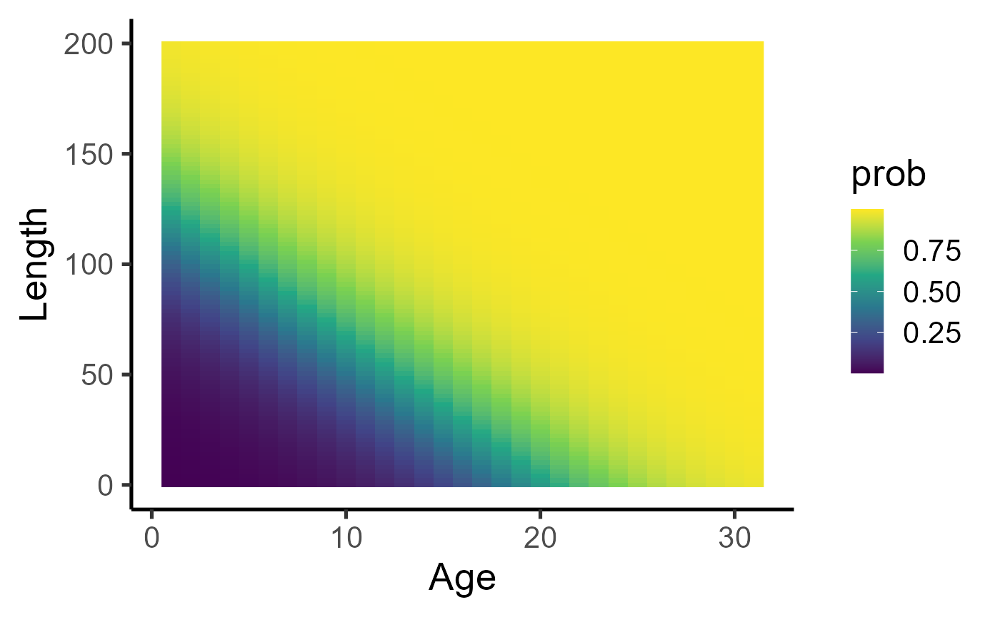
list(lvec = seq(0,200, length.out = 100), temp = c(4.61,5.61,6.61)) %>% cross_df() %>% mutate(prob = purrr::map2_dbl(lvec, temp, ~calc_maturation_prob1(a=10, l=.x, temp = .y))) %>%
ggplot() +
geom_line(aes(x=lvec, y=prob, group=temp, col=temp)) + scale_colour_viridis_c() + labs(x="Length", y="Maturation probability") + theme_classic(base_size=20)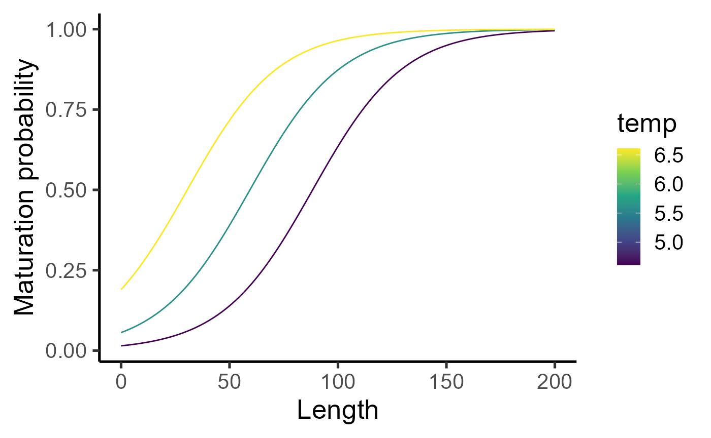
This PMRN influences the growth trajectories by determining the age at maturation, like so,
dat_full_00 = growth_trajectories(0,0)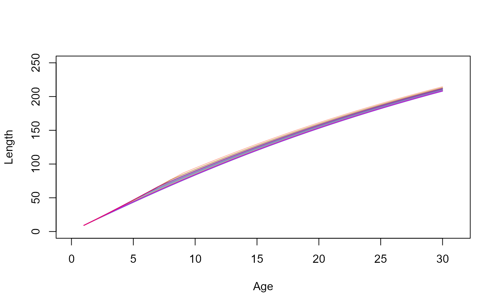
and leads to the following maturity ogives.
par(mfrow = c(2,1), mar=c(4,4,1,1))
dat_full %>% group_by(age) %>% summarize(maturity = mean(isMature)) %>% with(plot(maturity~age, ylab="Maturity", xlab="Age", type="l", col="cyan3", lwd=2))
dat_full %>% mutate(length_class = cut(length, breaks=20)) %>% group_by(length_class) %>% summarize(maturity = mean(isMature), length=mean(length)) %>% with(plot(maturity~length, ylab="Maturity", xlab="Length", type="l", col="cyan3", lwd=2))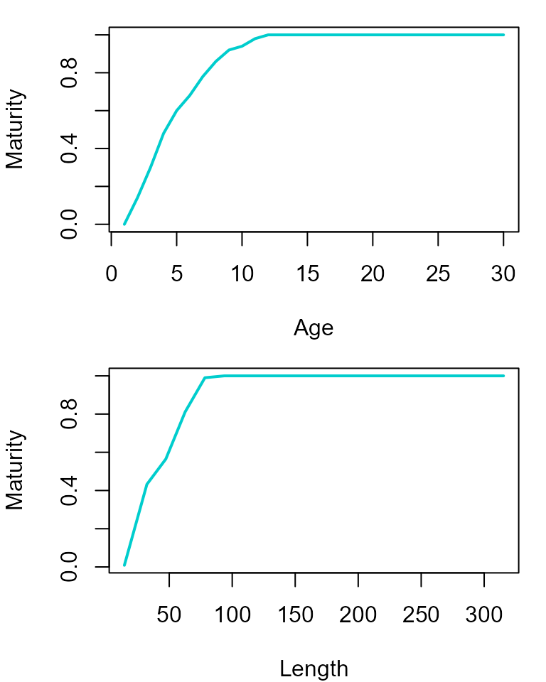
Parameters for maturation process are listed in the following table:
| Parameter | Description |
|---|---|
| PMRN width (length range of maturation envelope) | |
| probability at lower bound of maturation envelope | |
| PMRN slope | |
| PMRN intercept |
Reproduction and recruitment
Cumulative reproductive investment translates into production of eggs. The fecundity rate (number of eggs produced per year) is given by the following equation:
where is the weight of the fish of length ,
and is the mass-specific oocyte density of the mature pre-spawning ovary.
Eggs survive the first year with a probability to become recruits. Number of recruits additionally also follows a temperature dependence with parameter and a Ricker density dependence with parameter ,
where is the spawning stock biomass of the population
| Parameter | Description |
|---|---|
| Maximum survival probability of offspring, | |
| SSB at which survival probability drops to half |
list(x = seq(0,10, length.out=100), temp = c(4.61, 5.61, 6.61)) %>% cross_df() %>% mutate(y = exp(0.5135*(temp-5.61)) * 2^(-x/0.530)) %>%
ggplot(aes(y=y,x=x, col=temp, group=temp)) + geom_line(size=1) + labs(x="Spawning stock biomass (Mt)", y = "Recruits / Recruits_0") + theme_classic(base_size = 20) + scale_colour_viridis_c()## Warning: Using `size` aesthetic for lines was deprecated in ggplot2 3.4.0.
## ℹ Please use `linewidth` instead.
## This warning is displayed once every 8 hours.
## Call `lifecycle::last_lifecycle_warnings()` to see where this warning was
## generated.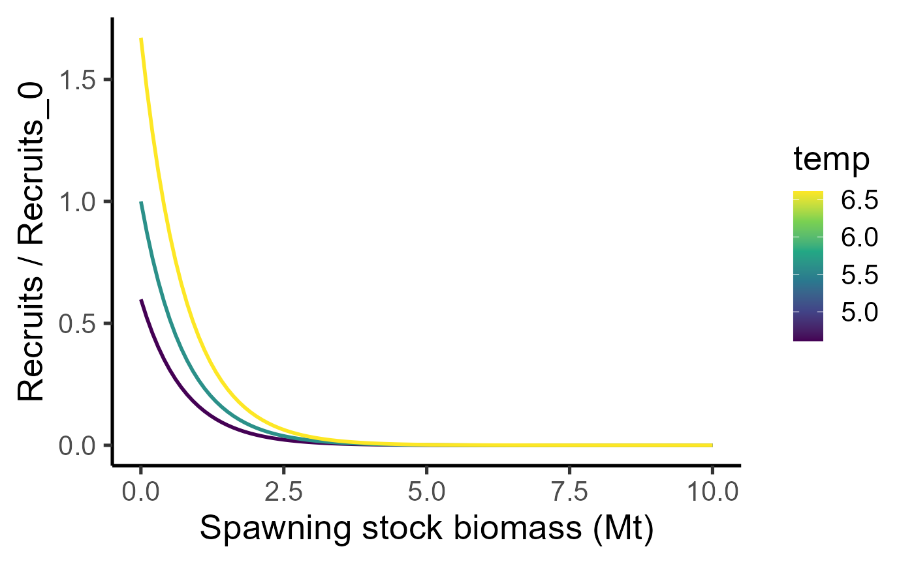
Here is the number of recruits per fish as a function of spawning stock biomass obtained from the growth trajectories above.
dat_full %>% ggplot(aes(x=ssb, y=fec)) + geom_point(aes(col=temp)) + scale_colour_viridis_c() + labs(x="Spawning stock biomass (kT)", y = "Recruits per capita") + theme_classic(base_size=20) + scale_y_log10(limits = c(1e-4, NA)) ## Warning in scale_y_log10(limits = c(1e-04, NA)): log-10
## transformation introduced infinite values.## Warning: Removed 67 rows containing missing values or values outside the scale range
## (`geom_point()`).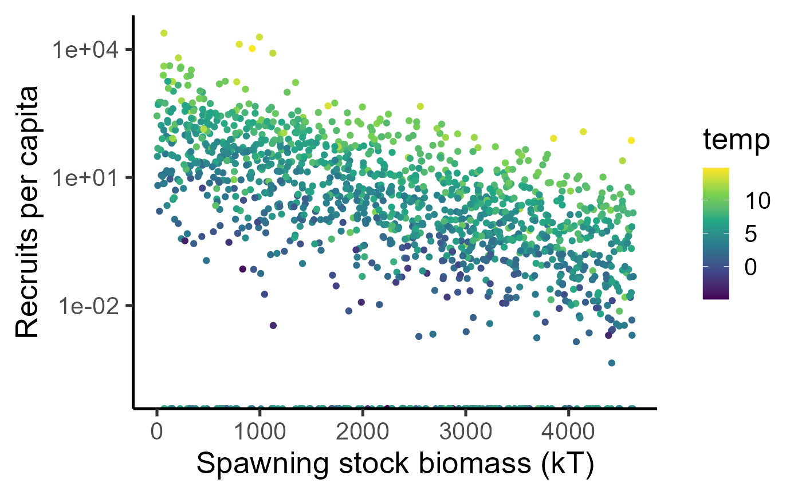
dat_full %>% mutate(ssb_class = ave(ssb, cut(ssb, breaks = 30))) %>% group_by(age, ssb_class) %>% summarize(recr = mean(fec)) %>%
ggplot() + geom_tile(aes(x=age, y=ssb_class, fill=log(1+recr))) + scale_fill_viridis_c() + labs(y="Spawning stock biomass (kT)", x = "Age") + theme_classic(base_size=20)## `summarise()` has grouped output by 'age'. You can override using the `.groups`
## argument.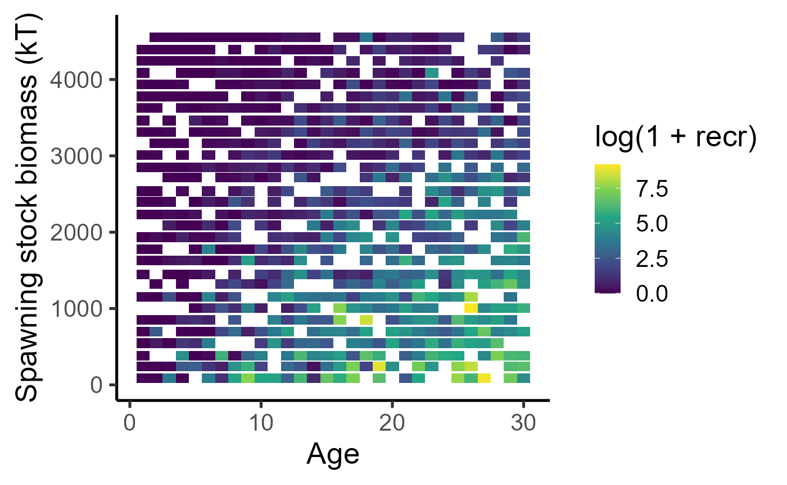
Mortality
We define the mortality rate of juvenile fish at reference temperature as
where parameters have the following meanings
| Parameter | Description |
|---|---|
| Length independent intrinsic mortality rate | |
| Allometric exponent of relationship between instantaneous natural mortality rate and body length | |
| Instantaneous natural mortality rate at reference length | |
| Reference length for natural mortality | |
| Coefficient of growth-dependent mortality rate | |
| Reference length of growth-dependent mortality | |
| Coefficient of GSI-dependent mortality rate | |
| Reference GSI for GSI-dependent mortality |
The term represents the additional mortality associated with greater energy acquisition rates (encoding a growth-mortality tradeoff), resulting, for e.g., from greater predation during foraging. Likewise, the term represents additional mortality related to overinvesting in reproduction, encoding a reproduction-mortality tradeoff. Also, note that these terms essentially guide evolution of life-history strategies, and disappear if traits are fixed at their reference values.
Then, the juvenile and adult instantaneous natural mortality rate is given by the following equation:
where the coefficient relates to the additional mortality experienced by mature fish in the spawing grounds, and symbols have the following meanings
| Parameter | Description |
|---|---|
| Reference temperature for natural mortality | |
| Exponent of the temperature dependence of mortality | |
| Mortality rate experienced by mature individuals in the spawning grounds | |
| Body length at age 0 |
dat_full %>%
ggplot(aes(y=mort, x=length, col=temp))+
geom_point(aes(shape=factor(isMature)), alpha=0.5)+
geom_jitter()+
labs(x="Length", y=expression("Inst. natural mortality rate (yr"^"-1"*")"), col="Temp", )+
theme_classic(base_size = 20)+
scale_color_viridis_c()+
scale_y_log10()+
scale_x_log10()#+## Warning: Removed 38 rows containing missing values or values outside the scale range
## (`geom_point()`).
## Removed 38 rows containing missing values or values outside the scale range
## (`geom_point()`).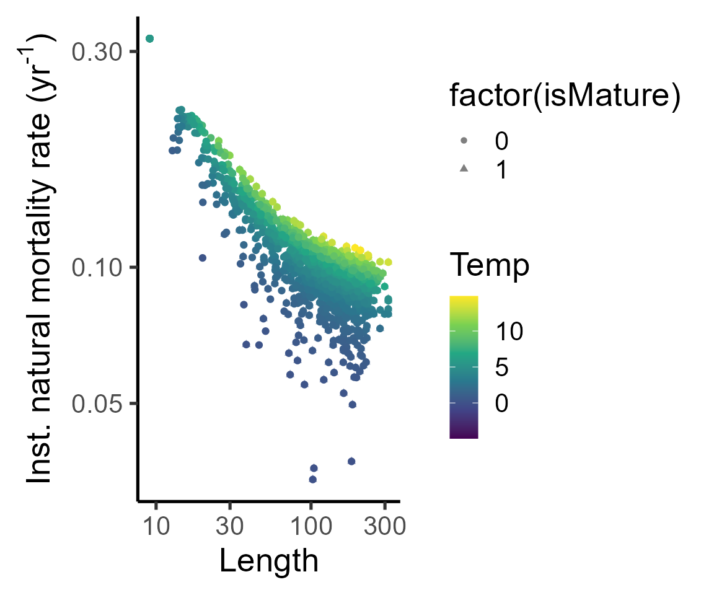
#facet_grid(cols=vars(isMature), labeller = as_labeller(c(`0`="Immature", `1`="Mature")))Instantaneous fishing mortality rate depends on the harvest proportion and fishing selectivity , and acts on top of natural mortality. Thus, for a given harvest proportion and minimum size limit , fishing mortality rate is given by
where is the fishing selectivity,
where is the Slope of the fishing selectivity curve.
fleet = new(Fleet)
fleet$readParams(fleet_params_file, F)
fleet$par$print()
fleet2 = new(Fleet)
fleet2$readParams(fleet_params_file, F)
fleet2$set_minSizeLimit(65)
bind_rows(
tibble(length = seq(0,200,length.out=100)) %>%
mutate(mort = purrr::map_dbl(length, ~fleet$fishingMortalityRef(.x)) ) |>
mutate(lmin = 45),
tibble(length = seq(0,200,length.out=100)) %>%
mutate(mort = purrr::map_dbl(length, ~fleet2$fishingMortalityRef(.x)) ) |>
mutate(lmin = 65)
) %>%
ggplot(aes(y=mort, x=length, group=lmin, col=factor(lmin)))+
geom_line(size=2)+
labs(x="Length", y="Ref fishing mortality rate", col="Lmin")+
theme_classic(base_size = 20)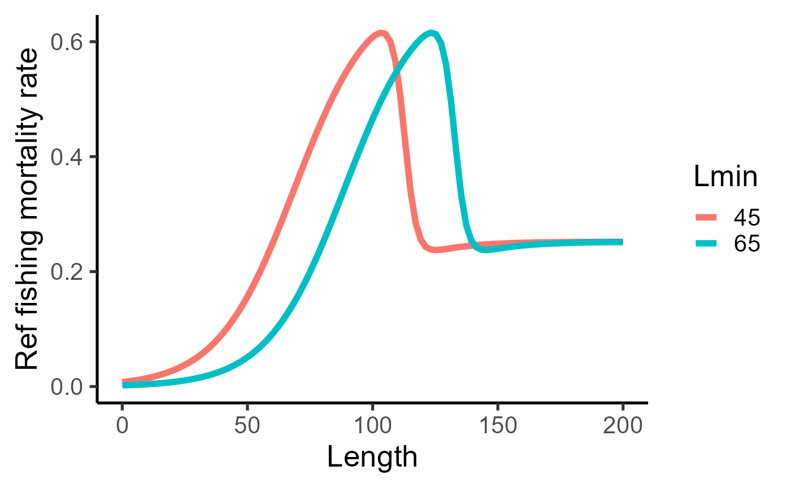
dat_full %>%
mutate(sel = purrr::map_dbl(length, ~fleet$fishingMortalityRef(.x)) ) |>
ggplot(aes(y=mort-log(1-0.4)*sel, x=length, col=temp))+geom_point(alpha=0.5)+geom_jitter()+labs(x="Length", y=expression("Inst. total mortality rate (yr"^"-1"*")"), col="Temp")+theme_classic(base_size = 20)+scale_color_viridis_c()+scale_y_log10()+scale_x_log10()## Warning: Removed 38 rows containing missing values or values outside the scale range
## (`geom_point()`).
## Removed 38 rows containing missing values or values outside the scale range
## (`geom_point()`).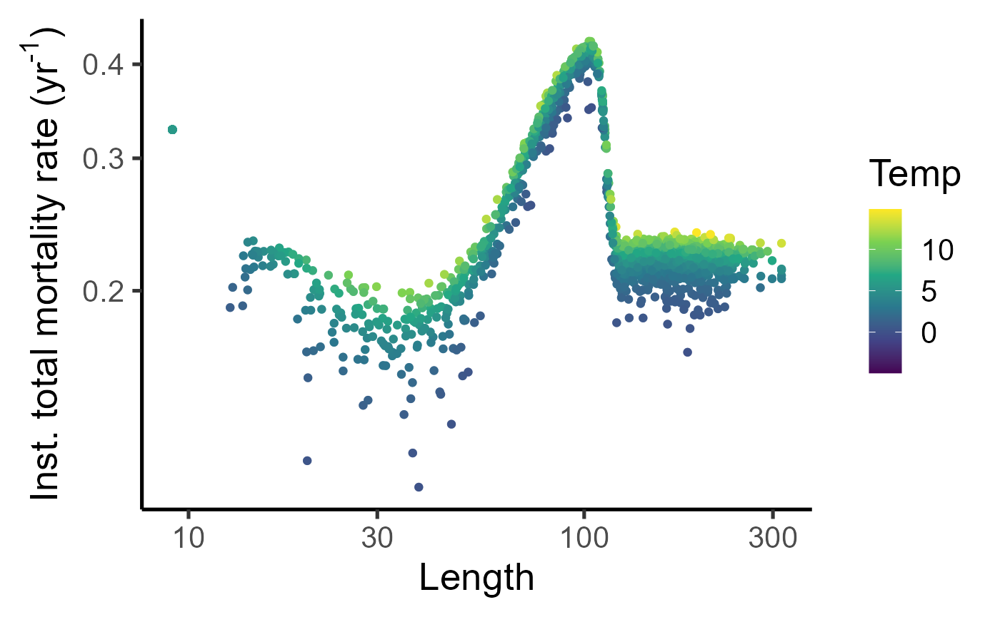